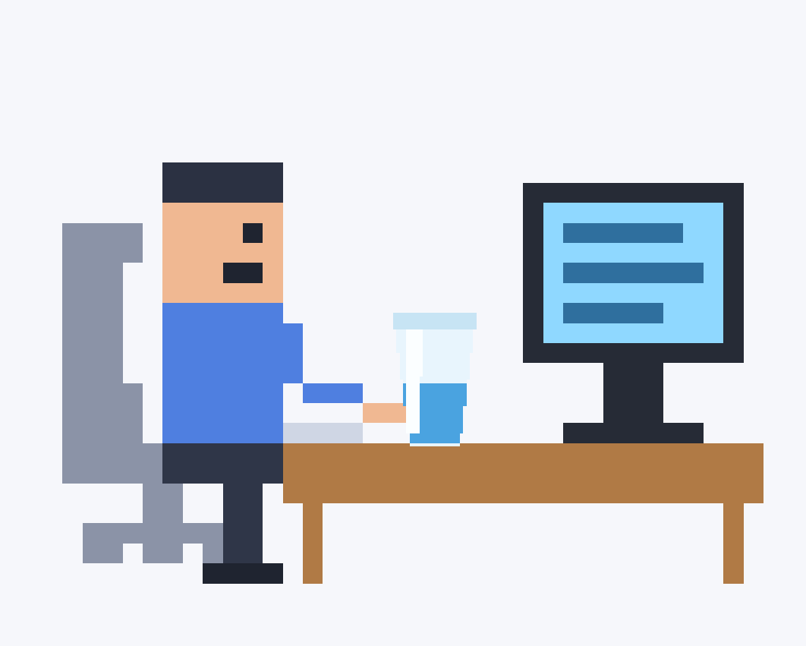
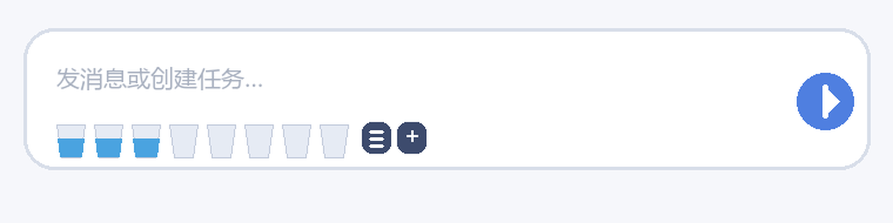

dsh-stand-reminder
Pixel-art widget像素风的久坐与饮水提醒插件 · DeepSeek Harness 桌面端


- 不花一个 token。 全部是页面内的计时器，不投递消息、不唤醒模型、不联网——这是它和「用定时任务提醒我」最本质的区别。
- 一天是一条状态机。 未开机 / 工作中 / 离开 / 收工，四种状态各自对应一套动作和角标：敲键盘是工作，空椅子是离开，翘腿是收工。
- 像素场景是手画的 SVG。 伸懒腰、举杯喝水、起身走出画面，都是 CSS 关键帧 + 分层切换，没有图片、没有渲染引擎，缩放到 300% 也不糊。
- 跨端口持久化。 DSH 每次启动端口都变，localStorage 会按 origin 隔离；插件自己注册了一条宿主路由，把配置和位置写进
~/.dsh下的 JSON，重启后位置、大小、设置都还在。 - 能验证，不是「看起来能跑」。 jsdom 里跑真实 DOM 的 107 项断言，加上存档读写、水合恢复等 19 项，共 126 项，
npm test一条命令跑完。